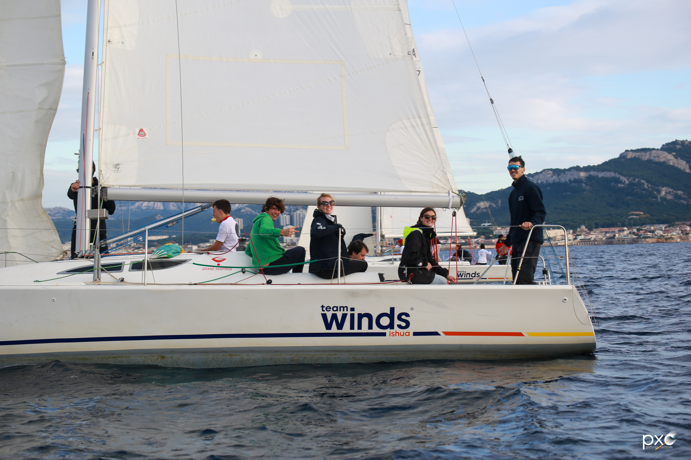
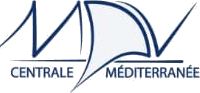
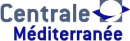
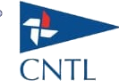

La régate
L'histoire d'un horizon partagé.
Une conviction simple : la voile doit être accessible à tous
Née en 2020, la Régate Centrale Méditerranée est portée par une conviction simple : la voile doit être accessible à tous. Depuis sa création, la RCM poursuit trois vocations fortes : ouvrir la voile au plus grand nombre, rassembler des étudiants venus de toute la France, et créer un pont naturel entre les futurs talents et les entreprises.
Une expérience sportive et humaine unique en Méditerranée
La RCM est aujourd'hui une régate monotype officielle, certifiée par la Fédération Française de Voile et la Fédération Française du Sport Universitaire. Elle s'impose comme l'un des plus grands rassemblements voile étudiants du Sud de la France.
Chaque édition réunit un village à terre installé sur le Vieux-Port de Marseille, avec repas conviviaux, animations festives et soirées dans des lieux privatisés. Les équipages venus de toute la France sont accueillis en colocation chez les étudiants de Centrale Méditerranée, pour une expérience aussi sportive qu'humaine.
Au-delà de la course, la RCM devient un lieu de rencontre, un moment suspendu où étudiants se retrouvent dans un cadre méditerranéen exceptionnel, entre mer turquoise, lumière d'automne et énergie étudiante.
Écoles participantes
Chaque année, une vingtaine d'écoles françaises se retrouvent sur l'eau : écoles d'ingénieurs (groupe Centrale, Mines, Polytechnique, INSA, ISAE-Supaero...), écoles de commerce (ESSEC, HEC, ESCP, Sciences Po...), ENS et universités scientifiques.

Nos partenaires
La Régate Centrale Méditerranée existe grâce au soutien de ses partenaires : Team Winds pour la location de la flotte de Grand Surprise, le CNTL pour l'organisation de la course, la Fédération Française de Voile pour la certification, et notre école Centrale Méditerranée.


